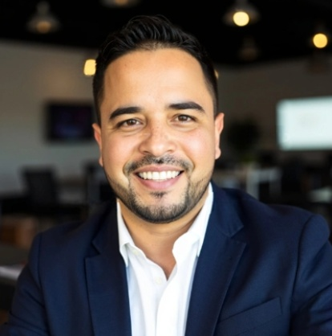

Miami, Florida
About Leander Mena
Hospitality & F&B Operations Leader
Blending hands-on floor leadership with strategic operations, financial discipline, and a guest-first mindset.

Professional Profile
MIAMI, FLORIDAWith more than 18 years in hospitality and food-and-beverage operations, I’ve led teams across restaurants, hotels, banquets, and catering throughout Miami. My experience spans pre-openings, day-to-day operations, and restructuring under pressure.
I’m comfortable both on the floor and behind the scenes—coaching service standards, managing schedules, working through P&L details, and partnering with ownership to align financial targets with guest experience.
AREAS OF FOCUS
- Leadership & Culture: Building accountable, service-driven teams with clear expectations and consistent follow-through.
- Operations: Implementing systems for checklists, service flow, sidework, and opening/closing procedures that keep shifts controlled and predictable.
- Financial Discipline: Managing labor, COGS, and controllables with a focus on both guest satisfaction and profitability.
- Guest Experience: Using feedback, reviews, and on-the-floor presence to continuously improve service and standards.